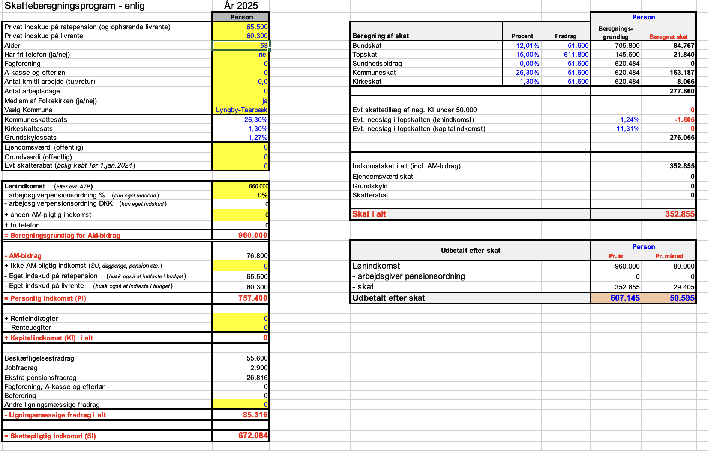
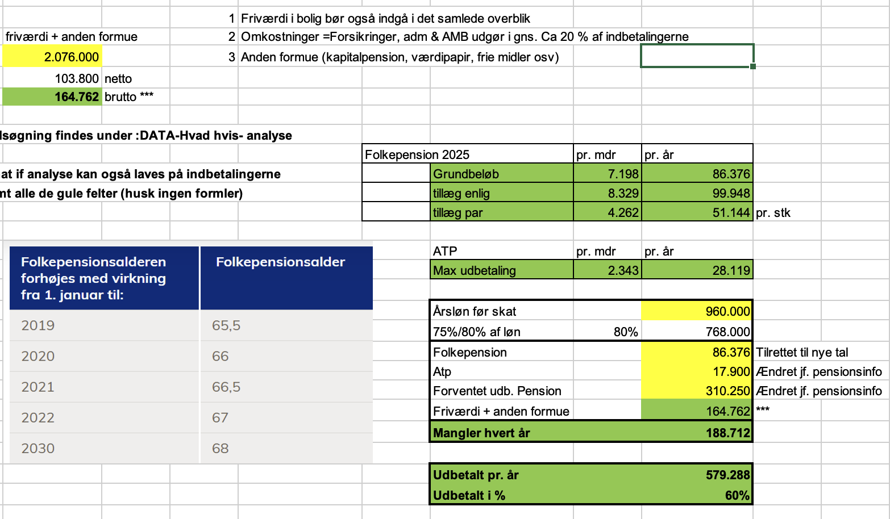
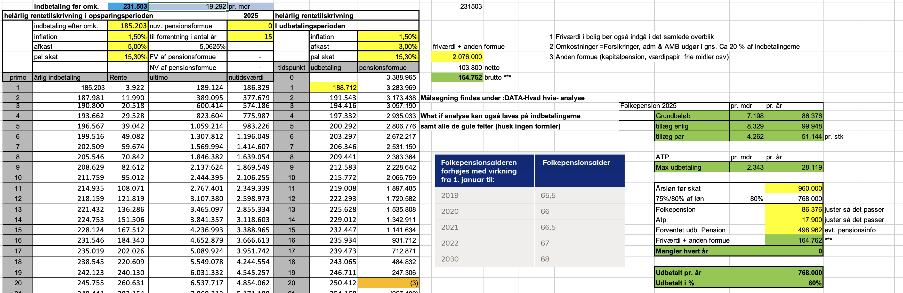
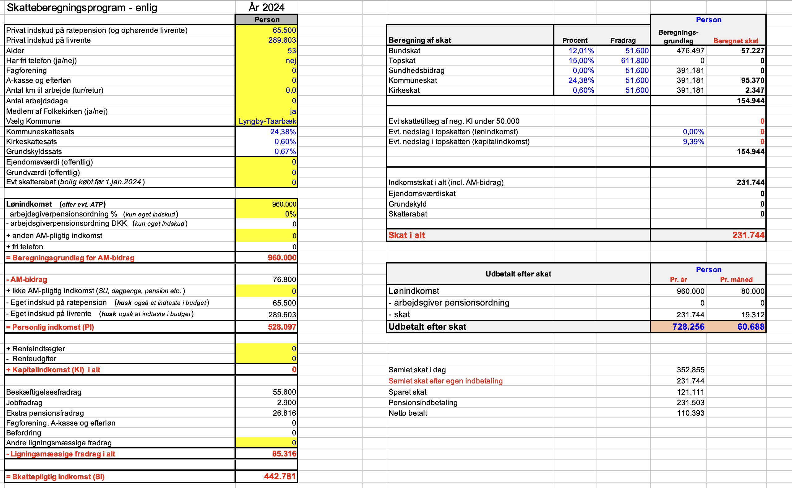
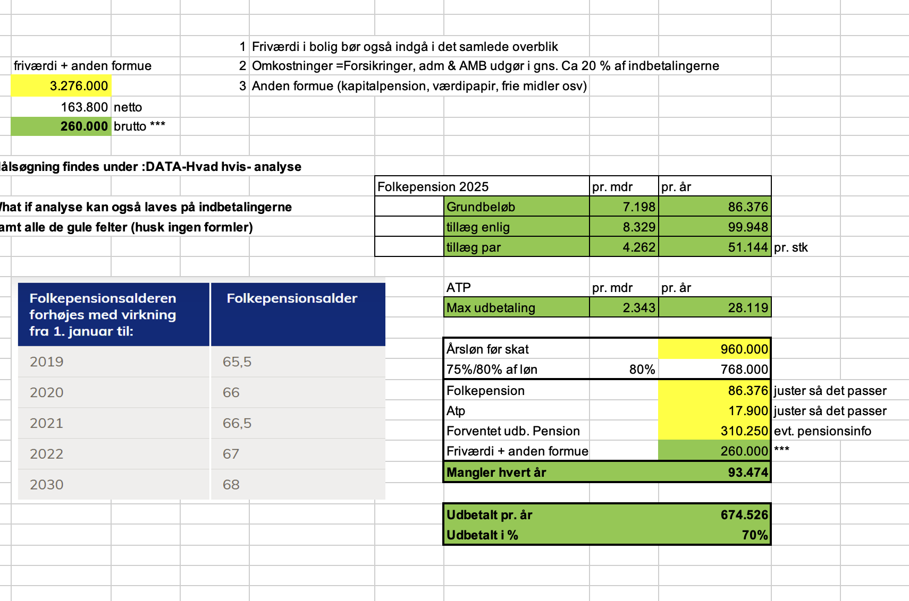
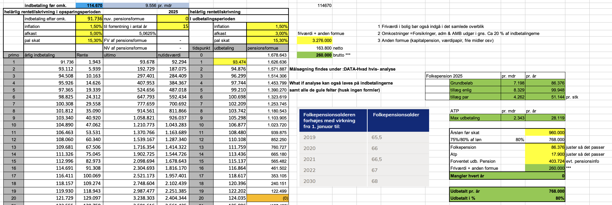
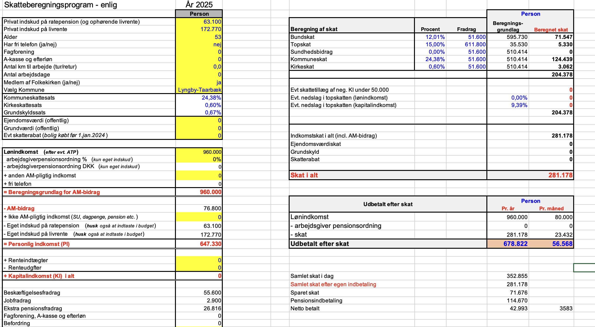

-

Temaprojekt 2 (OLA), del 2
Formål:
Løsningsforslag
Formålet med temaprojektet er at give dig kompetence i at bruge, hvad ud har lært i denne uge, i praksis.
Beskrivelse:
I skal læse introen til temaprojektet herunder, før I går i gang med opgaverne.
OLA 2 Intro -
Case: Pension
Du er uvildig pensionsrådgiver og skal have møde med Tom Henriksen senere i dag.
Tom er gift med Birgitte og har børnene Sara (14 år) og David (12 år), familien er medlemmer af folkekirken.
Tom er IT-chef i SAP Danmark A/S og er samtidig deres konsulent udadtil, når der skal landes meget store aftaler, der er intet befordringsfradrag.
Tom er ret dygtig til sit arbejde og får tingene eksekveret effektivt og professionelt.
Du har fået følgende oplysninger om Tom:
- Han har en månedsløn før skat på 80.000 kr.
- Tom har ikke fri telefon.
- Han går på pension om 15 år som 68-årig.
- De bor i hus i Virum. Huset er vurderet til 6 mio. kr. De har ingen gæld.
- Tom er ikke medlem af a-kasse eller fagforening.
- Birgitte har en Fiat 500 (uden gæld).
- Tom har en VW Passat station car (uden gæld).
- Birgitte er sygeplejerske og har en arbejdsmarkedspension, som dækker hende tilfredsstillende.
- Tom har ingen arbejdsmarkedspension, men indbetaler selv til en pensionsordning (privat) og har gjort det gennem mange år.
- Al anden opsparing står på kontantkonto.
- På sine ratepensioner i Danske Bank indbetaler Tom det maksimale, man må.
- På sin livrente i Danica indbetaler han op til opfyldningsfradraget.
- Han indbetaler ikke længere på sin kapitalpension i Danske Bank.
Tom har aldrig spekuleret meget på sin pension; men efter en nær ven og tidligere skolekammerat for nylig døde, har han tænkt meget på, hvordan hans familie vil være stillet økonomisk, hvis der sker ham noget.
Tom har sendt dig et udsnit af sin PensionsInfo – se bilag.
Pensionsinfo viser blandt andet hvad han får udbetalt i pension med det han allerede har opsparet og under forudsætning af, at han fortsætter med at spare op (se nedenfor).
Han synes ikke han har overblikket, og i bund og grund interesserer det ham ikke ret meget at sætte sig ind i det. Han kan dog godt lide at have styr på tingene, hvorfor han har brug for hurtig sparring. Han har derfor kontaktet dig for at få et overblik over hans pensionsaftaler – så sikrer han sig også en uvildig rådgivning, som han nok i sidste ende mener er mere kompetent til at varetage hans pengesager.
Afsender:
Du er uvildig pensionsrådgiver
Modtager:
Tom Henriksen
Du bør i denne opgave nedenstående materialer:
Skatteskabelon
Skatteskabelon
Dokumenter
PensionsInfo Tom
-
Opgave
LøsningsforslagBemærk Excel løsningsforslaget i skatteskabelonen ligger nederst i løsningsforslaget
Besvar nedenstående spørgsmål vha. skatteskabelonen.
Hvis der er manglende oplysninger, forsøg da at opstille budgettet bedst muligt inden kundemødet.
-
Vurder hvordan Tom er dækket i tilfælde af død?
Løsningsforslag:
Ved død vil der blive udbetalt 3.513.000 kr. engangsbeløb (før afgift) -
Hvad vil Tom få udbetalt i tilfælde af tab af erhvervsevne (TAE)?
Løsningsforslag:
Ved tab af erhvervsevne vil han modtage 398.000 kr. indtil han bliver 68 år 41,46% af hans løn i dag - Førtidspension fra det offentlige nedsættes da han har TAE forsikring.
Samt 150.000 kr. som et engangsbeløb -
Hvor meget har Tom udbetalt efter skat om måneden?
Vink: Benyt skatteskabelonen, bemærk lærebogen har 2024 inskudsgrænserne, for 2025 er grænserne ratepension 65.500 kr. og livrente 60.300 kr.
Løsningsforslag:
Tom får udbetalt 50.595 kr. om måneden efter skat.

-
Hvor meget skal vi skrive i celle R24 i skatteskabelonen i fanen Pensionsberegner 2025 som pension jvf. pensionsinfo?
Vink: Benyt nederste tabel i Pensionsinfo, bemærk at ratepensionerne kun løber over 10 år, vi forlænger disse, ved at dividere med 2 for at vi får et overblik over 20 år.
Løsningsforslag:
Her skal vi skrive det halve beløb af ratepensionerne samt livrenten, alså beløbene fra den øverste del af pensionspyramiden.
26500/2+27000/2+383000/2+92000 = 310.250,- kr. -
Hvor meget skal vi skrive i celle K7 i skatteskabelonen i fanen Pensionsberegner 2025 som friværdi + anden formue?
Vink: Vi regner med Tom ejer halvdelen af huset og at familien nedsparer 60% af værdien,samt at han får udbetalt 60% af kapitalpensionen.
Løsningsforslag:
Tom ejer halvdelen af huset og har 60% af værdien, samt at han får udbetalt 60% af kapitalpensionen.
Friværdien og formuen kan udregnes på følgende måde:
6000000*0,5*0,6+460.000*0,6 = 2.076.000,- kr.

-
Hvor meget mangler Tom i indtægt for at ramme 80% af hans tidligere løn når vi forudsætter de bliver boende i hjemmet?
Løsningsforslag:
Tom mangler hvert år 188.712,- kr. han er på 60% af sin nuværende løn. -
Hvor meget skal Tom yderligere indbetale til sin pensionsordning pr. måned for at opnå 80% af sin tidligere løn?
Vink: Lav en kopi af pensionsfanen i skatteskabelonen, benyt målsøgning for at bestemme beløbet.
Løsningsforslag:
Tom skal yderligere indbetale 19.292 kr. pr. måned.

-
Hvor meget sparer Tom om året i skat, når han øger indbetalingen til sin pensionsordning?
Løsningsforslag:
Samlet set sparer Tom 121.111 kr. om året i skat nu.
Indbetaling Skat Samlet skat i dag 352.855 Samlet skat efter egen indbetaling 231.744 Sparet skat 121.111

-
Er det helt korrekt, når vi angiver hvor meget Tom sparer om året i skat?
Vink: Her tænkes på om man skal betale skatten på et andet tidspunkt, og om der er nogen fordele ved dette.
Løsningsforslag:
Nej, det er ikke helt korrekt, skatten udskydes, der skal betales skat ved udbetalingen af pensionen.
Her vil skatten alt andet lige være lavere end den nuværende skat, da Tom ikke har samme indkomst.
Det vil undervejs også være 15,3% PAL-beskatning af et afkast af pensionen.
-
Hvor meget vil Tom mangle hvert år før yderligere indbetaling, hvis Birgitte og Tom vælger at sælge huset i stedet for at blive boende i hjemmet?
Vink: Lav en kopi af pensionsfanen i skatteskabelonen, korriger friværdi formue feltet.
Løsningsforslag:
Tom vil så kun mangle 93.474,- kr. om året, hvis de sælger huset, her skal man være opmærksom på at der vil være andre udgifter i forbindelse med et nyt sted at bo.

-
Hvor meget skal Tom yderligere indbetale til sin pensionsordning pr. måned for at opnå 80% af sin tidligere løn, hvis de sælger huset?
Vink: Målsøg for at finde beløbet.
Løsningsforslag:
Tom skal yderligere indbetale 9.556 kr. pr. måned, altså mindre end hvis de ikke sælger huset.

-
Hvor meget sparer Tom om året i skat, når han øger indbetalingen til sin pensionsordning til 9.556 kr. pr. måned?
Løsningsforslag:
Tom sparer nu 71.676 kr. om året i skat, han beskattes først senere ved udbetalingen af pensionen.

Løsningsforslag Skatteskabelonen
Løsningsforslag Skatteskabelonen
-
Vurder hvordan Tom er dækket i tilfælde af død?